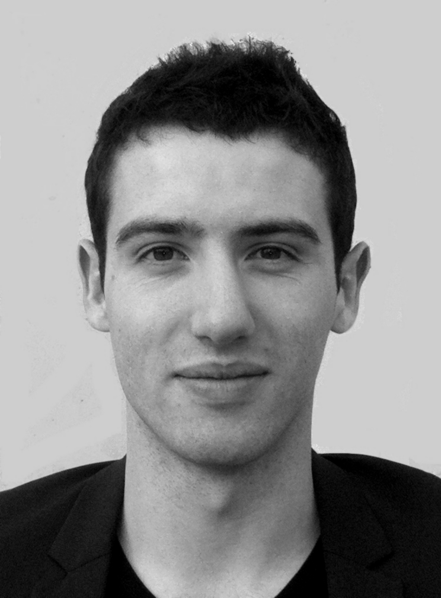

Nottingham University, l'une nombreuses universités proposées par notre service
Une opportunité exceptionnelle d'étudier dans les meilleurs établissements du monde
Rencontres, nouvelles amitiés et découverte d'une nouvelle culture sont au programme !

J'ai passé mon premier semestre de 4A à l'université STH de Stockholm. C'était une expérience incroyable, j'ai rencontré des personnes géniales. J'ai appris des choses en réseaux que je n'aurai sûrement jamais découvert si j'étais resté à Toulouse ce semestre.Jean, 3MIC
En bref, le semestre que j'ai passé à l'université de Barcelone a sûrement été l'un des meilleurs de ma scolarité. J'ai découvert un pays et des gens fantastiques tout en améliorant de manière considérable mes compétences à la fois en espagnol et en mécanique des fluides. A conseiller d'urgence !Marie, 4GM